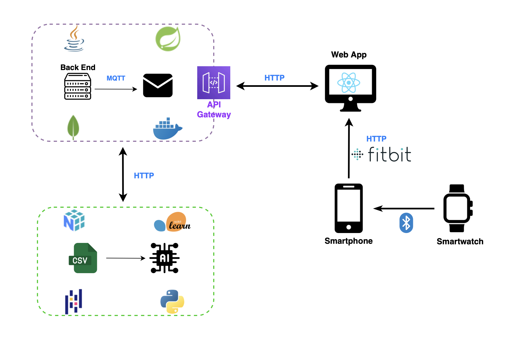
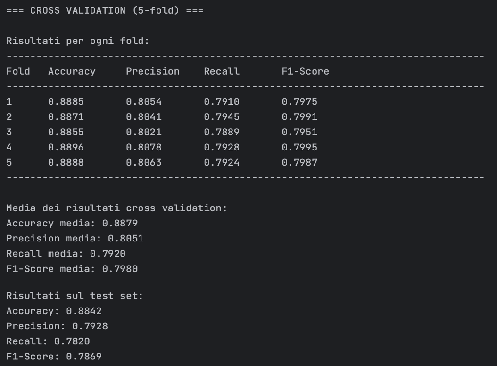

Questo progetto si pone l’obiettivo di sviluppare una web app che possa offrire un supporto concreto nella gestione di queste patologie, mettendo a disposizione strumenti semplici ma efficaci per monitorare le abitudini quotidiane del paziente e rilevare eventuali cambiamenti significativi nel suo stile di vita. Il sistema si rivolge sia ai caregiver, che possono così avere un quadro più chiaro e aggiornato della situazione, sia ai medici, che possono accedere a dati utili per una valutazione clinica più approfondita.
Il progetto si è sviluppato su due fronti principali. Da una parte, è stato implementato un sistema di acquisizione dati basato su un sensore IoT, ovvero lo smatwatch Google Pixel, pensato per raccogliere in modo non invasivo informazioni rilevanti legate al comportamento e allo stato fisico del paziente. Dall’altra, è stata progettata una piattaforma accessibile via web, dotata di dashboard intuitive e personalizzate, in grado di restituire una visione sintetica ma dettagliata dell’andamento quotidiano.
Tecnologie Utilizzate
Backend: Java Spring Boot
Il cuore logico del sistema risiede nel backend, sviluppato utilizzando il framework Java Spring Boot. Esso rappresenta oggi uno degli standard de facto nello sviluppo di applicazioni enterprise grazie alla sua architettura modulare e al forte ecosistema di librerie integrate.
Nel contesto dell’applicazione, Spring Boot gestisce l'intera logica di business: riceve i dati biometrici inviati dal dispositivo wearable tramite chiamate HTTP REST, li valida, li processa e li memorizza nel database. È responsabile anche dell’elaborazione periodica di questi dati per identificare eventuali anomalie cliniche, confrontando i valori rilevati con soglie parametriche definite per ciascun paziente. Quando vengono individuate anomalie, il backend genera un allarme che viene memorizzato e reso disponibile agli utenti autorizzati.
Frontend: React
L’interfaccia utente dell’applicazione è stata sviluppata interamente in React, una delle librerie javascript più diffuse per la costruzione di interfacce web dinamiche e performanti. React permette di realizzare componenti riutilizzabili e manutenibili, separando in modo chiaro la logica di presentazione dallo stato applicativo.
Il frontend offre ai caregiver e ai dottori una dashboard interattiva attraverso cui è possibile consultare in tempo reale i dati biometrici raccolti. La scelta di React ha permesso di implementare grafici e visualizzazioni dinamiche che presentano in modo intuitivo l’andamento dei parametri vitali nel tempo, consentendo così una rapida individuazione di trend o eventi clinici rilevanti.
API Gateway: AWS API Gateway
Per gestire il traffico in ingresso verso il backend, l’applicazione utilizza API Gateway di Amazon Web Services (AWS). Il ruolo dell’API Gateway è quello di fungere da punto d’ingresso unico per tutte le richieste esterne rivolte al sistema, mascherando la complessità e l’organizzazione interna.
Database: MongoDB
Per la memorizzazione persistente dei dati, delle anomalie e delle informazioni degli utenti, è stato scelto MongoDB, un database NoSQL orientato ai documenti. La scelta di MongoDB si è rivelata particolarmente adeguata alla natura dei dati gestiti nel sistema, caratterizzati da una certa eterogeneità e dinamicità.
Ogni nuovo dato inviato dallo smartwatch viene registrato come un documento JSON-like all’interno di collezioni MongoDB. Grazie alla flessibilità dello schema, è possibile memorizzare campi opzionali o nuovi parametri biometrici senza necessità di modificare strutture rigide come accadrebbe in un classico database relazionale. Questa caratteristica si adatta perfettamente al contesto IoT, in cui i dati possono variare in frequenza, granularità e tipologia a seconda dei dispositivi e dei sensori impiegati.
Acquisizione dati: Fitbit
L’intero sistema si basa sull’acquisizione di dati generati da uno smartwatch compatibile con Fitbit. Essa rappresenta una piattaforma consolidata per il monitoraggio continuo di parametri vitali come frequenza cardiaca, ossigenazione del sangue, qualità del sonno, conteggio dei passi e attività fisica.
Lo smartwatch sincronizza automaticamente i dati raccolti con l’applicazione mobile Fitbit, che funge da primo punto di aggregazione. A partire da qui, il sistema sviluppato sfrutta le API REST ufficiali messe a disposizione da Fitbit per accedere in modo programmato ai dati sincronizzati.
MQTT
Nel contesto del sistema sviluppato, è stata adottata la tecnologia MQTT (Message Queuing Telemetry Transport) per la gestione efficiente della comunicazione. Questo protocollo di messaggistica leggero, progettato per ambienti a bassa larghezza di banda e con risorse limitate, si adatta perfettamente allo scenario IoT in cui dispositivi come smartwatch trasmettono dati biometrici in modo continuo e affidabile.
Architettura del sistema

Il backend, sviluppato con Java Spring Boot, gestisce la logica applicativa e l’interazione con il database MongoDB, dove vengono memorizzati i dati biometrici degli utenti. Il frontend, realizzato con React, consente l’interazione degli utenti (caregiver e dottori) tramite un’interfaccia web moderna e responsive. Le richieste tra frontend e backend vengono instradate tramite AWS API Gateway, che agisce da punto di accesso centralizzato e sicuro. I dati biometrici vengono acquisiti tramite l’applicazione Fitbit, che sincronizza i valori registrati dallo smartwatch e li rende disponibili via API. Inoltre, il protocollo MQTT viene utilizzato per supportare comunicazioni leggere ed efficienti tra dispositivi, facilitando l’invio rapido di dati in tempo reale.
Machine Learning
Per l’analisi dei dati, è stato implementato un algoritmo di classificazione basato su Random Forest, un modello supervisionato ampiamente utilizzato nel machine learning per la sua capacità di gestire dati rumorosi e altamente non lineari. È una tecnica che combina diversi alberi decisionali indipendenti tra loro per migliorare la capacità predittiva e la generalizzazione del modello complessivo. Il modello è stato sviluppato in Python, utilizzando la libreria scikit-learn.

Dashboard
La dashboard della pagina web rappresenta il centro operativo dell’applicazione, offrendo una panoramica intuitiva e aggiornata dei dati biometrici raccolti dallo smartwatch. Qui, caregiver e dottori possono monitorare facilmente i parametri vitali come battito cardiaco, ossigenazione del sangue (SpO₂), sonno, attività fisica e peso. La visualizzazione avviene tramite grafici chiari e notifiche immediate in caso di anomalie, permettendo un controllo tempestivo e personalizzato dello stato di salute dell’utente.